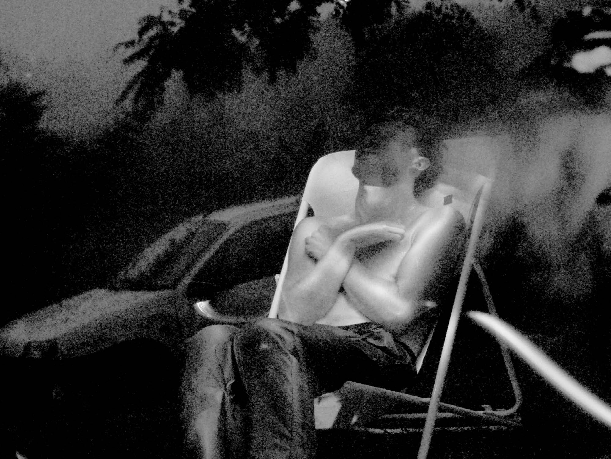

GAME OVER
Swatted par Ismaël Joffroy Chandoutis • 2018

Une sonnerie de téléphone. Un écran noir. Au bout du fil, le 911. D’une voix monocorde, un homme annonce qu’il a tué son père, et qu’il tient en joue sa mère et son petit frère. Glaçante et sans détour : telle est l’ouverture de Swatted, le dernier film d’Ismaël Joffroy Chandoutis.
Diplômé du Fresnoy, le cinéaste se fait connaître en 2017 avec Ondes Noires, un film court dans lequel il s’intéresse aux personnes intolérantes aux ondes électromagnétiques. Dans Swatted, il s’interroge à nouveau sur les limites et les dangers du progrès technologique.
Le swatting est un phénomène de cyber-harcèlement consistant à faire intervenir les forces de police chez un joueur* en ligne, et à observer l’arrestation en direct. Le harceleur* récupère les données personnelles d’un joueur*, appelle la police en usurpant son identité, et l’informe qu’il* vient ou qu’il* est sur le point de commettre un meurtre ou un suicide. Un nom, une adresse, et le tour est joué. Quelques minutes plus tard, une unité de police, arme au poing, arrive au domicile de la victime. L’arrestation, violente, se fait devant la webcam, sous les yeux de centaines de spectateur*.
Swatted est une réalisation composée de found footage (vidéos de swatting, témoignages audios de victimes recueillies sur internet, appels frauduleux archivés par la police) et d’images de jeux vidéo. Ces documents constituent le squelette, la trame narrative du film. Avec l’aide de développeur professionnel*, le cinéaste a choisi de travailler les images vectorielles du jeu vidéo GTA IV, en supprimant la plupart de leurs textures, et d’en garderles lignes qui les composent. Par ce procédé de réduction des images, d’un retour à leur état minimal, le cinéaste retire une partie de leur réalisme et donne à voir un monde à la frontière entre réel et virtuel, un univers trouble, brouillé, ambiguë. Il met de cette manière en image la confusion entre réalité et virtualité à laquelle se confrontent les joueur*.
Les vidéos de swatting résonnent directement avec les images virtuelles représentant courses-poursuites et fusillades. Dans une séquence, une jeune femme se filme incarnant un policier dans un jeu de tir. Lorsque des policiers frappent à la porte, elle quitte le champet l’on entend son arrestation en direct. Un lent zoom avant est effectué sur l’image de la chambre. Les images captées par la webcam remplacent progressivement les images virtuelles à l’écran. Le jeu apparaît alors comme le prolongement, la contamination ou le reflet du réel.
Au-delà de sa dimension réflexive, Swatted se définit également comme une expérience audiovisuelle hypnotique et immersive. En exploitant le caractère hyperréaliste et cinématographique du jeu, et en juxtaposant des nappes sonores graves et atmosphériques avec ces images (lents panoramiques et travellings sur la ville orageuse, les arbres, les pylônes, etc.), le cinéaste distille sur toute la durée du film une ambiance nocturne pesante, oppressante, et rend palpable la menace qui plane au-dessus des joueur*. En s’appuyant sur les témoignages des victimes, le cinéaste dessine en creux la présence quasi fantômatique des cyberharceleur*, cachés derrière leurs écrans et leurs pseudonymes, à la recherche d’une proie, en quête d’adrénaline.
Ce film hybride, à mi-chemin entredocumentaire et art vidéo, envoûte et laisse une trace après le visionnage. En inscrivant au cœur de son dispositif le langage de ceux qu’il dénonce, le film parvient à nous immerger efficacementdans le malaise décrit, et nous entraîneà nous questionner sur notre vulnérabilitéface aux écrans et à internet.
| Salle | Heure | Programmation |
|---|---|---|
| Salle Moulinage | 10h15·15h30 | Expérience du regard |